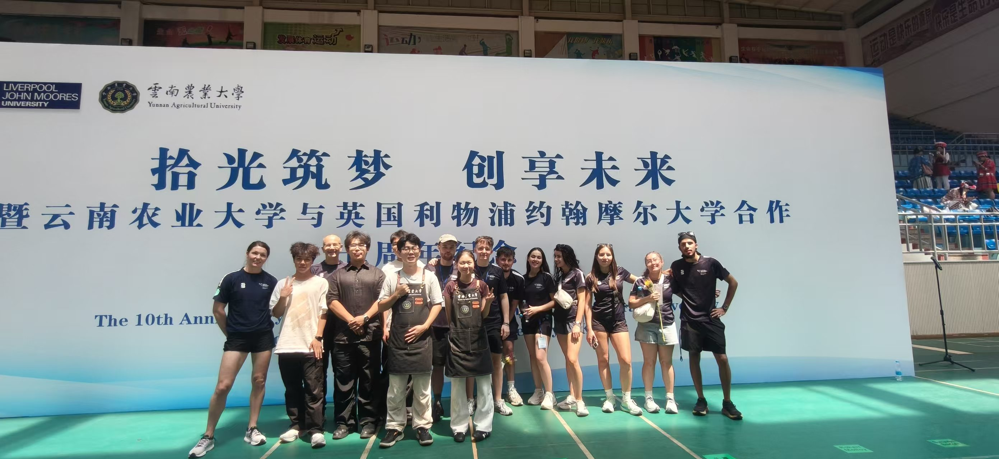
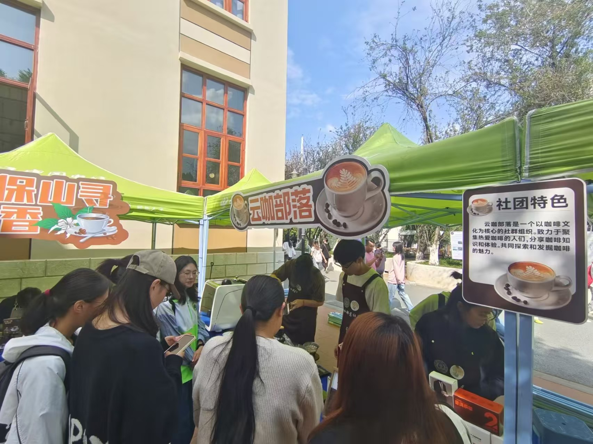

冲煮部
专注手冲、意式等咖啡实操教学，开展品鉴实训，规范冲煮手法，深耕云南豆萃取技巧。
手冲实操
我们是谁
云咖部落成立于云南农业大学特色农科办学背景下，依托学校咖啡专业学科资源、立足云南本土咖啡产业优势应运而生，以普及咖啡文化、传播滇咖知识、培育咖啡品鉴与实操人才为宗旨，长期开展咖啡品鉴、手冲实操、生豆处理、咖农文化研学等活动。
发展至今，部落已走过四年成长历程，从最初十余名咖啡爱好者的小团体，发展至稳定在册成员120余人，覆盖全校多个院系。社团定位为校园咖啡文化实践平台，面向全校热爱咖啡的在校生，并对成员明确要求：尊重咖啡行业文化、恪守食材操作卫生规范，主动参与课程实训，乐于分享交流，秉持踏实钻研、热爱滇咖的初心，拒绝浮夸猎奇式消费导向。
社团常态化举办手冲技能教学、云南产区生豆品鉴会、咖啡烘焙体验、云南咖啡产地科普沙龙，打造"云农滇咖研学"特色品牌活动，组织走进云南咖啡产区实践学习，产出大量滇咖科普推文与品鉴记录，多次在校特色社团评比中获评优秀社团。社团以掌握咖啡实操、读懂云南咖啡产业、传承本土咖文化为培养目标。未来，云咖部落将持续联动茶学、农学专业拓展实践活动，讲好云南精品咖啡故事。
组织架构
专注手冲、意式等咖啡实操教学，开展品鉴实训，规范冲煮手法，深耕云南豆萃取技巧。
手冲实操负责社团咖啡活动图文、推文制作，宣传滇咖文化，运营社交平台，记录各类品鉴与实操活动。
滇咖宣传管理社团会费、物料采购收支，登记账务明细，统筹咖啡器具、原料采购预算，定期公示财务情况。
器具采购负责社员招新、档案管理，统筹品鉴、研学活动人员安排，组织部门交流与日常考勤，以及二课学分相关工作。
招新研学活动剪影
从25届成员大会到咖院品鉴，从校园咖啡活动到咖啡豆大赛现场。
每一帧都是云咖部落的滇咖注脚。
品牌项目

01为深化校园文化建设，推动产教融合与咖啡文化传播，我校举办"有你必咖"云南农业大学首届大学生咖啡文化节。本次活动以"搭建集教育、文化、产业、创业于一体的大学生咖啡文化交流平台"为宗旨，致力于深化产教融合。
咖啡文化 · 产教融合 · 创业平台组织社员前往甄次方咖啡学院开展研学活动，专业讲师讲解云南咖啡冲煮、烘焙实操知识，沉浸式体验标准化咖啡制作，近距离学习行业专业技术，拓宽滇咖专业视野。
冲煮烘焙 · 标准化制程 · 专业视野